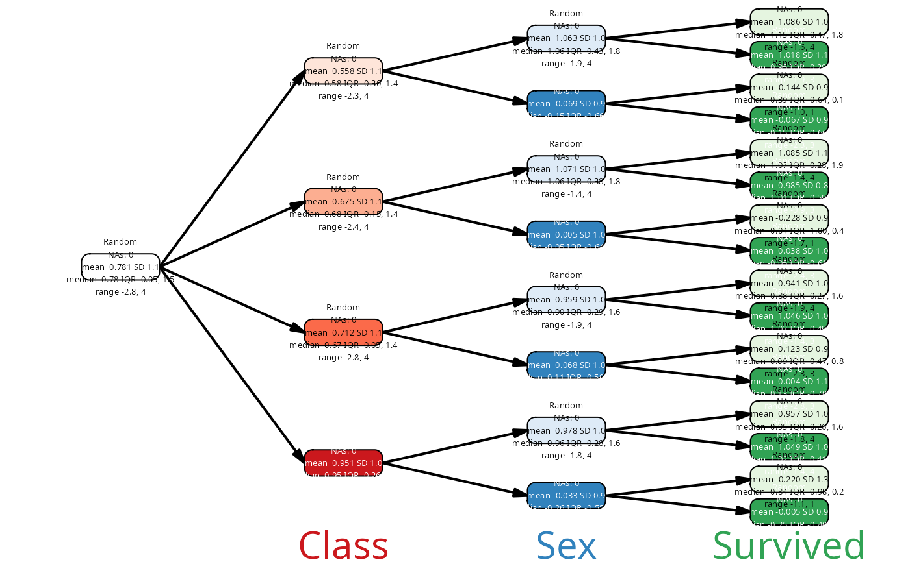
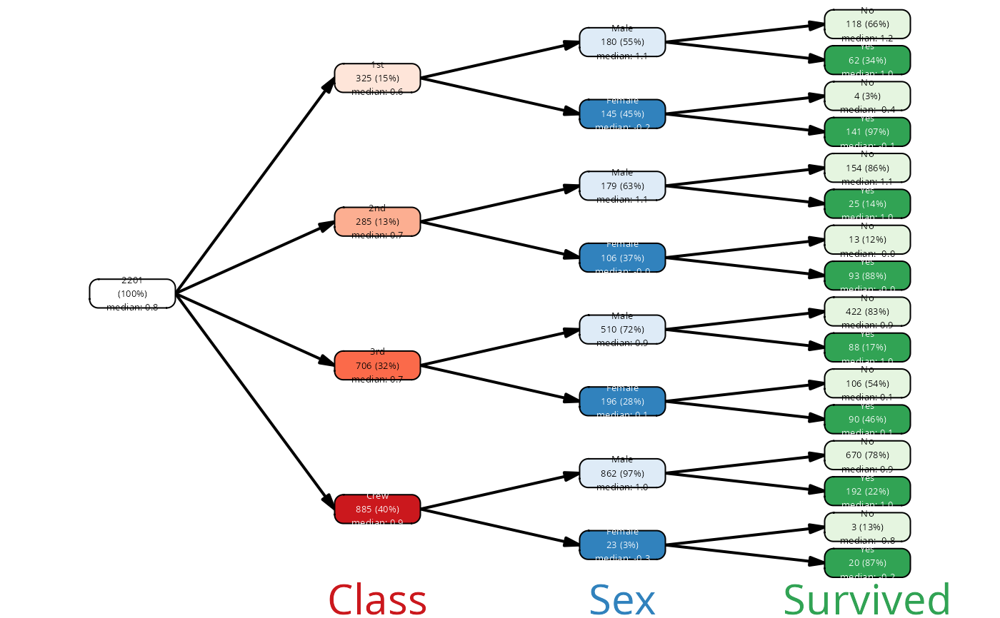
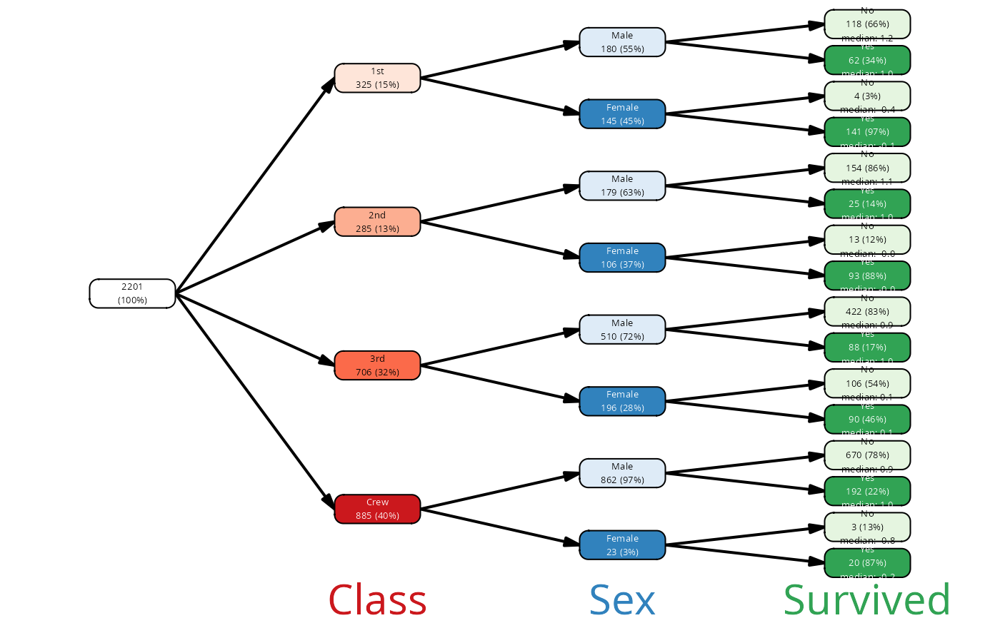
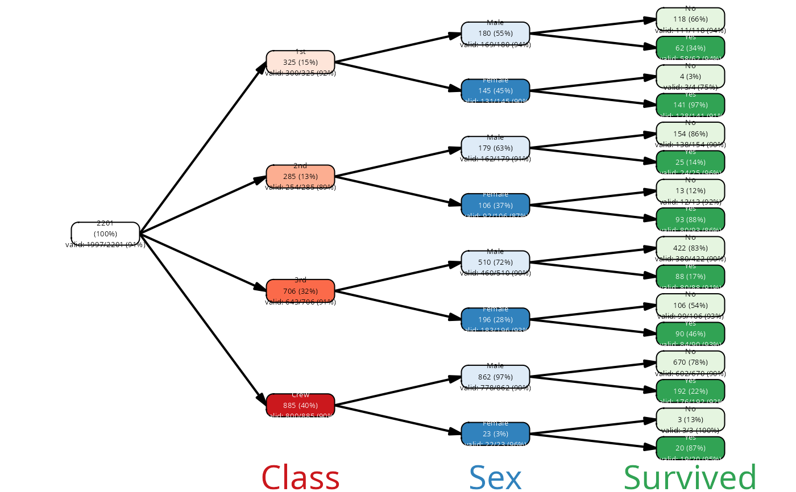

Summarize a case variable for each node of a vtree
summary_vt.Rdsummary_vt() and summary_vt_df() summarize a case variable for each
node of a vtree. That is, for each node in the vtree, they select the
cases that match the path to that node and summarize the specified
variable for those cases.
Usage
summary_vt(cases, vtree, col, fmt = NULL, .col = NULL)
summary_vt_df(cases, vtree, col, .col = NULL)Arguments
- cases
A data frame of cases, with one row per observation.
- vtree
A vtree object.
- col
The column variable to summarize. This should be a single column name, quoted or not.
- fmt
An expression for customized formatting. See Examples.
- .col
If you want to provide a column name in a variable, use .col and not col.
Value
A tibble with one row per node of the vtree, and columns for the summary statistics of the specified variable for the cases that match the path to that node.
Details
For example, in the Titanic data set, you can ask what were the
different proportions of survivors for males in the 1st class. This
corresponds to the summary of variable Survived for the node with
path Class:1st/Sex:Male.
The summary_vt_df() function returns a data frame with columns
corresponding to various and column data type dependent statistic
measures, while summary_vt() creates a character vector with these
measures.
For numeric variables, the resulting data frame (tibble) returned by
summary_vt_df() will contain
the following columns: n, mean, sd, min, max, median, q1,
q3, iqr, valid, and missing.
For factor variables, the resulting data frame will contain the following
columns: n, valid, missing, unique, levels and levels_str.
The levels column is a list column, and each cell contains a list of
the counts of each level of the factor variable for that node. The
levels_str column is a character column that contains a string
representation of the levels and their counts, which can be used for
labeling the nodes.
You can use these functions to create informative labels for the nodes.
Using the fmt parameter, it is possible to create fully
summaries. The expression is evaluated within the context of the summary
data frame, which means that you can use all columns avaialble in that
data frame. For example, you can use an expression like
sprintf("%s", fmt(median, digits = 2)) or glue("{median}").
Examples
cases <- cases_from_freqtable(Titanic)
vt <- vtree(cases, Class, Sex, Survived)
csm_txt <- cases |> summary_vt(vt, Age)
vt |> mutate(label = csm_txt) |> plot()
cases$Random <- rnorm(nrow(cases)) + (cases$Sex == "Male")
csm_txt <- cases |> summary_vt(vt, Random)
vt |> mutate(label = csm_txt) |> plot()

# make some default labels
vt <- vt |> add_labels()
csm_txt <- cases |>
summary_vt(vt, Random,
fmt = sprintf("median: %.1f",median))
vt |>
mutate(label = paste0(label, "\n", csm_txt)) |>
plot()

# now the same but only for the leafs
# leaf is a column in the nodes data frame, TRUE or FALSE
vt |>
mutate(label = ifelse(leaf,
paste0(label, "\n", csm_txt),
label)) |>
plot()

# introduce a few missing values
cases$Random[ runif(nrow(cases)) < .1 ] <- NA
csm_txt <- cases |>
summary_vt(vt, Random,
fmt = sprintf("valid: %d/%d (%d%%)",
valid, n, round(100 * valid/n)))
vt |>
mutate(label = paste0(label, "\n", csm_txt)) |>
plot()

# Example for the data frame variant
csm_df <- cases |> summary_vt_df(vt, Age)
vt |>
mutate(label = sprintf("%s\n%s", node_val,
csm_df$levels_str)) |>
plot()